This vignette covers the esriMap_* functions included in the package, which provide functionality for downloading and and using ESRI basemaps for making beautiful maps.
Getting and Plotting ESRI basemaps
esriMap_getMap()
This function will query the ArcGIS REST services API to:
* download a .png of the basemap with the desired zoom and extent
* load the basemap into the environment as a raster::Raster* object
The minimum information needed is the center values for latitude and longitude:
suppressPackageStartupMessages(library(PWFSLSmoke))
centerLon <- -122.384
centerLat <- 47.666
map <- esriMap_getMap(centerLon, centerLat, zoom = 10)
mapclass : RasterBrick
dimensions : 640, 641, 410240, 3 (nrow, ncol, ncell, nlayers)
resolution : 0.00137, 0.000923 (x, y)
extent : -122.8228, -121.9446, 47.37077, 47.96149 (xmin, xmax, ymin, ymax)
coord. ref. : +init=epsg:4326 +proj=longlat +datum=WGS84 +no_defs +ellps=WGS84 +towgs84=0,0,0
data source : in memory
names : red, green, blue
min values : 8, 8, 8
max values : 252, 252, 252 esriMap_plotOnStaticMap()
Once a map is loaded, it can be plotted using esriMap_plotOnStaticMap(). This base plotting capabilities build into the raster package to plot the basemap. Points and lines can be added using base R plotting functionality.
esriMap_plotOnStaticMap(map)
addMarker(centerLon, centerLat)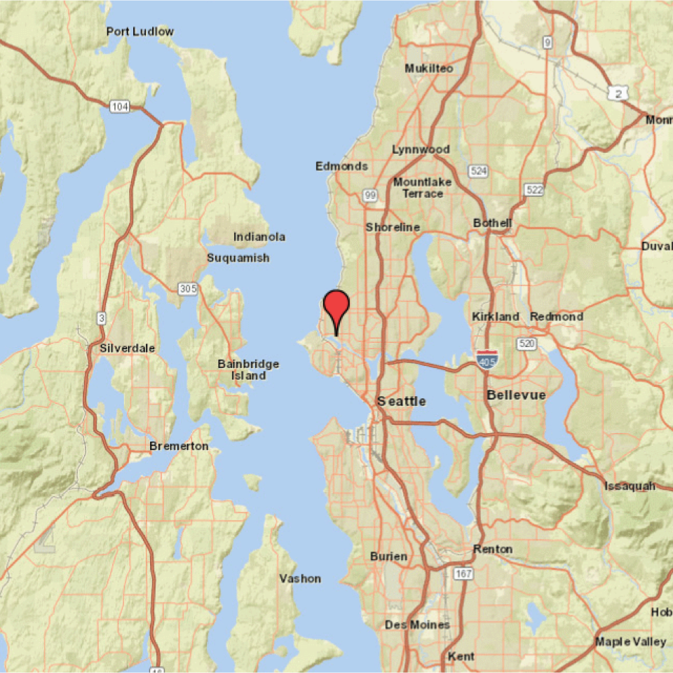
Creating beautiful maps with Esri maps
Let’s use an Esri basemap to create a map of smoke monitors in the western United States. We start off by fetching the basemap with appropriate zoom and size. We will center it in Nevada, with a zoom level of 5. We will use the world_shaded_relief basemap because it is simple but will give us some context.
map <- esriMap_getMap(-119.369, 42.4502453, zoom = 5, width = 500, height = 500, maptype = "world_shaded_relief")Now let’s get some monitoring data to plot, using PWFSLSmoke::loadLatest().
monitors <- loadLatest()Next, let’s add some additional locations of interest, perhaps fires.
fires_lon <- c(-122.1, -120.4, -121.7)
fires_lat <- c(39.5, 44.4, 43.9)Finally, plot all of it together.
par(pty = 's')
esriMap_plotOnStaticMap(map)
maps::map('state', add = TRUE)
monitor_map(monitors, add = TRUE)
addIcon('redFlame', fires_lon, fires_lat, expansion = 0.005)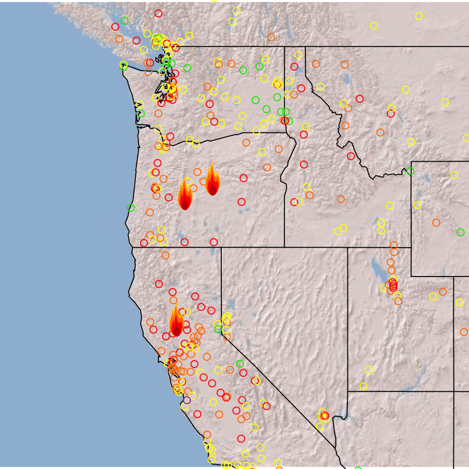
Available Map Types
The ESRI map server includes many different styles of maps. Several are built into the function but you can ask for other custom maps, which can be found here.
You can specify the map resource to download using the maptype argument. Built into the function are five maptypes:
* natGeo
* worldStreetMap
* worldTopoMap
* satellite
* deLorme
But there are many map resources that are possible to download. Below are examples from 16 different basemap options, and their corresponding descriptons as of October, 2018:
Satellite Imagery:
ESRI_Imagery_World_2D
This map presents low-resolution imagery for the world and high-resolution imagery for the United States and other metropolitan areas around the world. The map includes NASA Blue Marble: Next Generation 500m resolution imagery at small scales (above 1:1,000,000), i-cubed 15m eSAT imagery at medium-to-large scales (down to 1:70,000) for the world, and USGS 15m Landsat imagery for Antarctica. It also includes 1m i-cubed Nationwide Select imagery for the continental United States, and GeoEye IKONOS 1m resolution imagery for Hawaii, parts of Alaska, and several hundred metropolitan areas around the world. For more information on this map, including our terms of use, visit us online
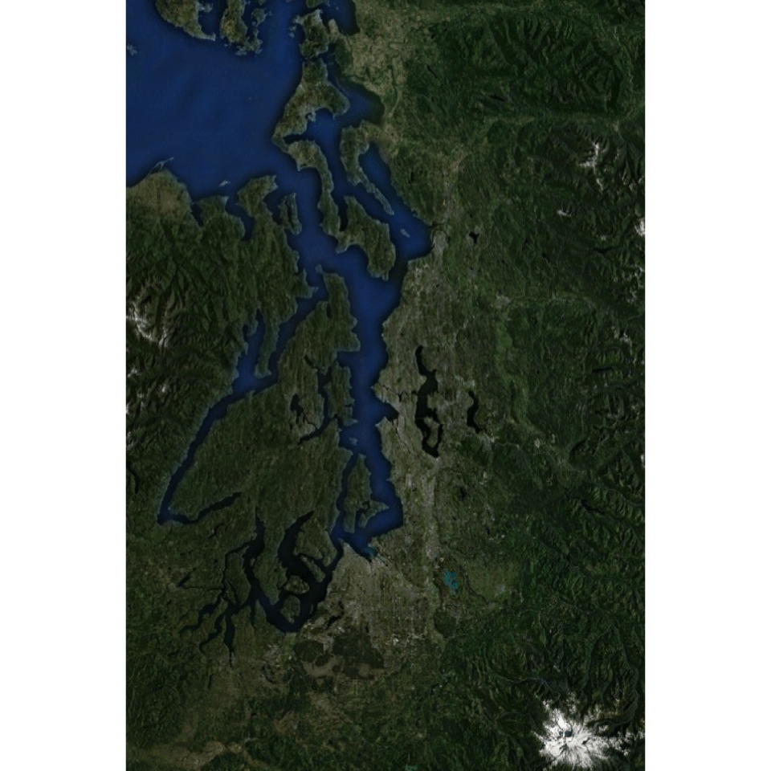
World_Imagery
World Imagery provides one meter or better satellite and aerial imagery in many parts of the world and lower resolution satellite imagery worldwide. The map includes 15m TerraColor imagery at small and mid-scales (591M down to 72k) and 2.5m SPOT Imagery (288k to 72k) for the world, and USGS 15m Landsat imagery for Antarctica. The map features 0.3m resolution imagery in the continental United States and 0.6m resolution imagery in parts of Western Europe from Digital Globe. Recent 1m USDA NAIP imagery is available in select states of the US. In other parts of the world, 1 meter resolution imagery is available from GeoEye IKONOS, AeroGRID, and IGN Spain. Additionally, imagery at different resolutions has been contributed by the GIS User Community. For more information on this map, including the terms of use, visit us online
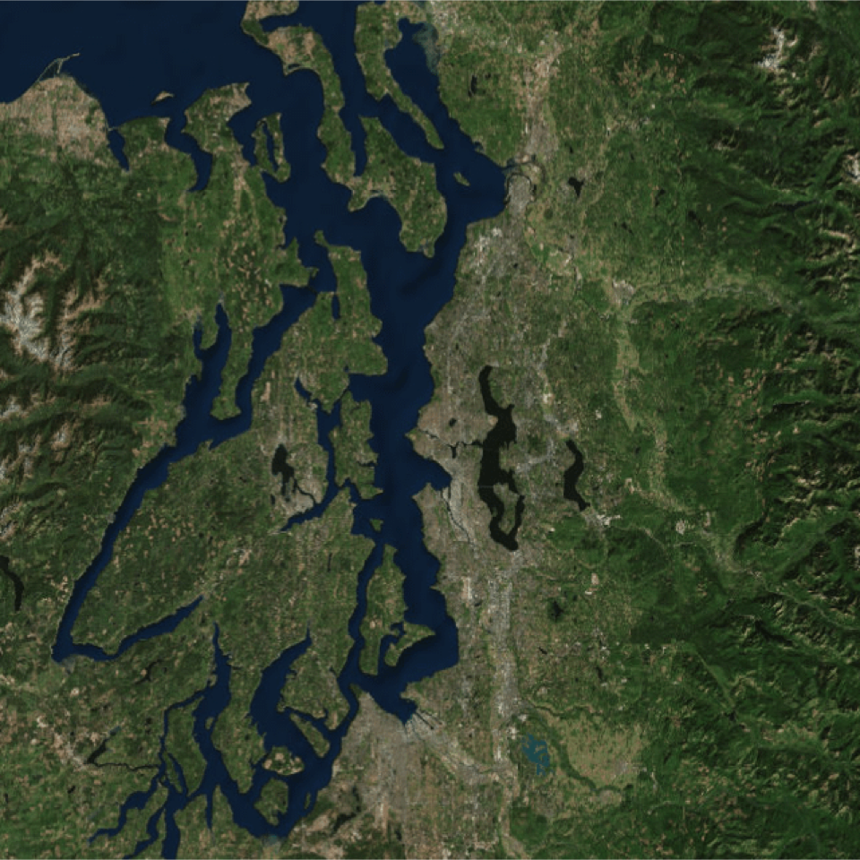
Streets/political
ESRI_StreetMap_World_2D
This worldwide street map presents highway-level data for the world and street-level data for the United States, Canada, Europe, Southern Africa and elsewhere. This comprehensive street map includes highways, major roads, minor roads, railways, water features, administrative boundaries, cities, parks, and landmarks, overlaid on shaded relief imagery for added context. The street map was developed by Esri using DeLorme data and NAVTEQ street data. Coverage for street-level data elsewhere in the world includes Mexico (Mexico City only), Russia (Moscow, St. Petersburg only), and Turkey (Istanbul, Ankara only). For more information on this map, including our terms of use, visit us online
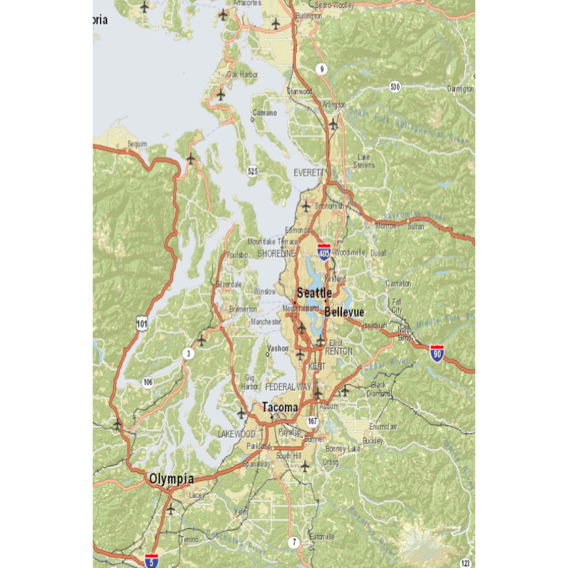
NatGeo_World_Map
This map is designed to be used as a general reference map for informational and educational purposes as well as a base map by GIS professionals and other users for creating web maps and web mapping applications. The map was developed by National Geographic and Esri and reflects the distinctive National Geographic cartographic style in a multi-scale reference map of the world. The map was authored using data from a variety of leading data providers, including Garmin, HERE, UNEP-WCMC, NASA, ESA, USGS, and others. This reference map includes administrative boundaries, cities, protected areas, highways, roads, railways, water features, buildings and landmarks, overlaid on shaded relief and land cover imagery for added context. The map currently includes global coverage down to ~1:144k scale and more detailed coverage for North America down to ~1:9k scale. For more information on this map, including our terms of use, visit us online
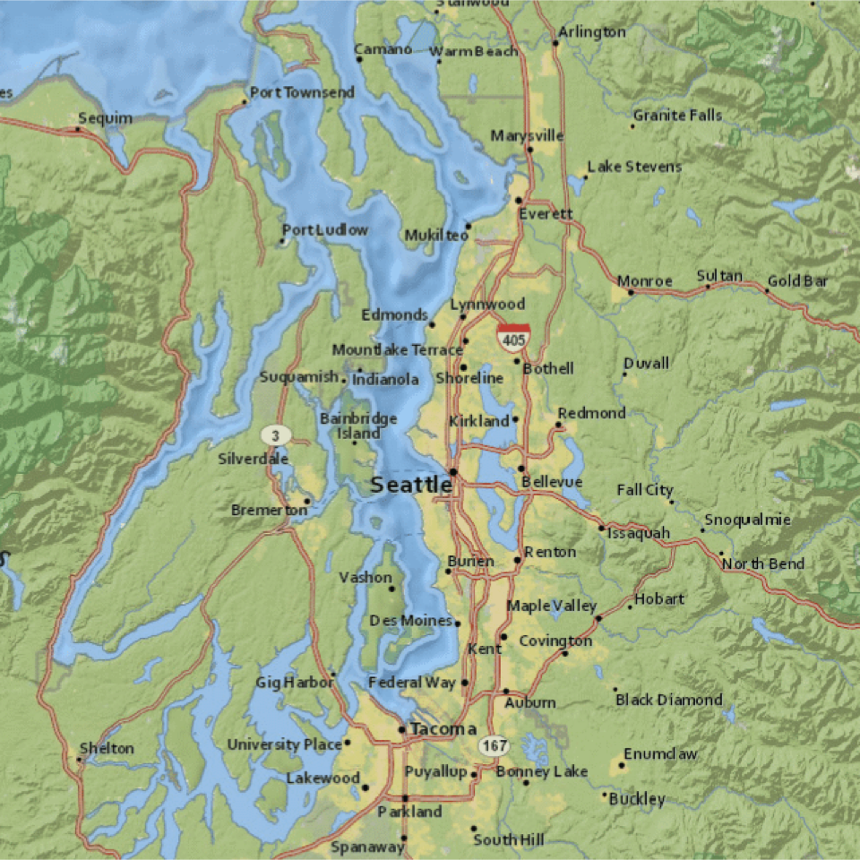
World_Street_Map
This worldwide street map presents highway-level data for the world. Street-level data includes the United States; much of Canada; Mexico; Europe; Japan; Australia and New Zealand; India; South America and Central America; Africa; and most of the Middle East. This comprehensive street map includes highways, major roads, minor roads, one-way arrow indicators, railways, water features, administrative boundaries, cities, parks, and landmarks, overlaid on shaded relief imagery for added context. The map also includes building footprints for selected areas. Coverage is provided down to ~1:4k with ~1:1k and ~1:2k data available in select urban areas. The street map was developed by Esri using Esri basemap data, Garmin basemap layers, U.S. Geological Survey (USGS) elevation data, Intact Forest Landscape (IFL) data for the world; HERE data for Europe, Australia and New Zealand, North America, South America and Central America, Africa, India, and most of the Middle East; OpenStreetMap contributors for select countries in Africa and Pacific Islands; NGCC data for China; and select data from the GIS user community. For more information on this map, including the terms of use, visit us online

Terrain/Topo
NGS_Topo_US_2D
This map presents land cover imagery for the world and detailed topographic maps for the United States. The map includes the National Park Service (NPS) Natural Earth physical map at 1.24km per pixel for the world at small scales, i-cubed eTOPO 1:250,000-scale maps for the contiguous United States at medium scales, and National Geographic TOPO! 1:100,000 and 1:24,000-scale maps (1:250,000 and 1:63,000 in Alaska) for the United States at large scales. The TOPO! maps are seamless, scanned images of United States Geological Survey (USGS) paper topographic maps. For more information on this map, including our terms of use, visit us online
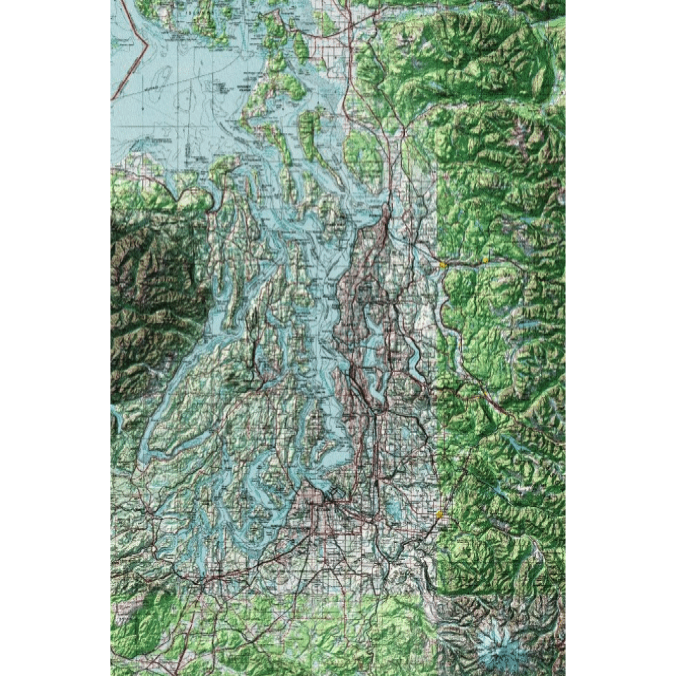
USA_Topo_Maps
This map presents land cover imagery for the world and detailed topographic maps for the United States. The map includes the National Park Service (NPS) Natural Earth physical map at 1.24km per pixel for the world at small scales, i-cubed eTOPO 1:250,000-scale maps for the contiguous United States at medium scales, and National Geographic TOPO! 1:100,000 and 1:24,000-scale maps (1:250,000 and 1:63,000 in Alaska) for the United States at large scales. The TOPO! maps are seamless, scanned images of United States Geological Survey (USGS) paper topographic maps. For more information on this map, including our terms of use, visit us online
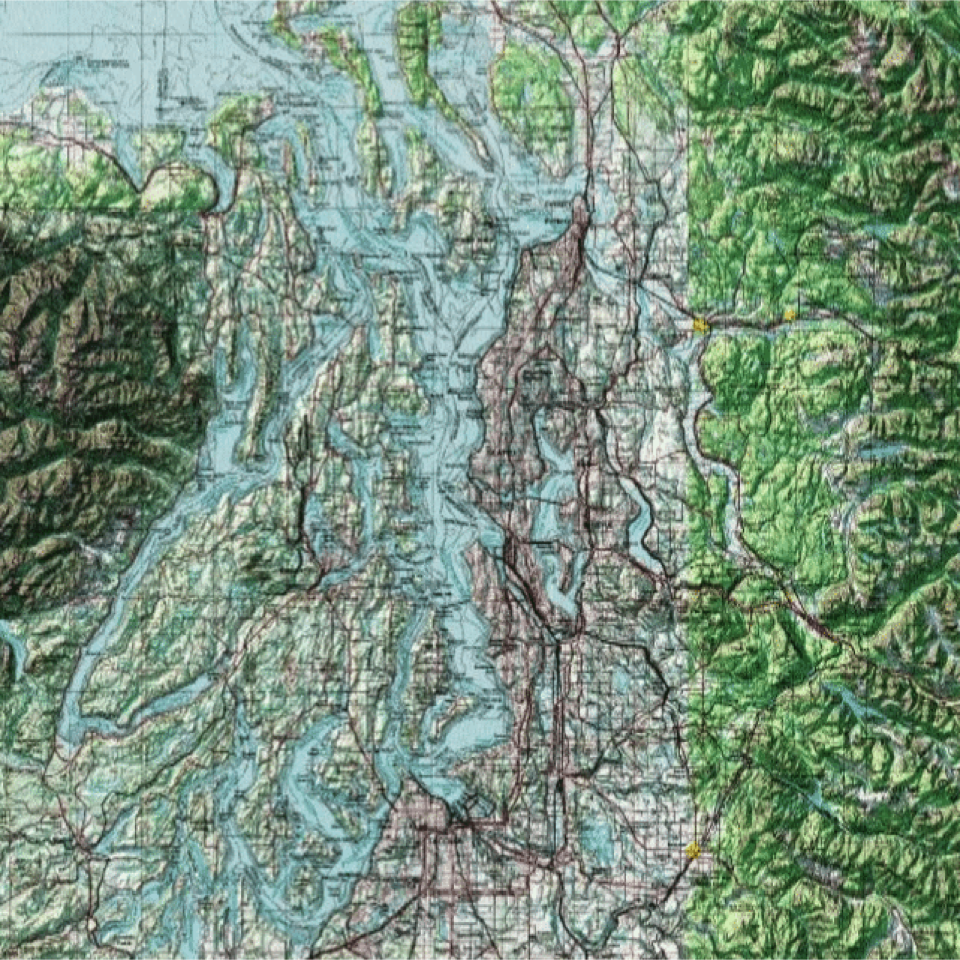
World_Physical_Relief
This map presents the Natural Earth physical map at 1.24km per pixel for the world and 500m for the coterminous United States. For more information on this map, including our terms of use, visit us online
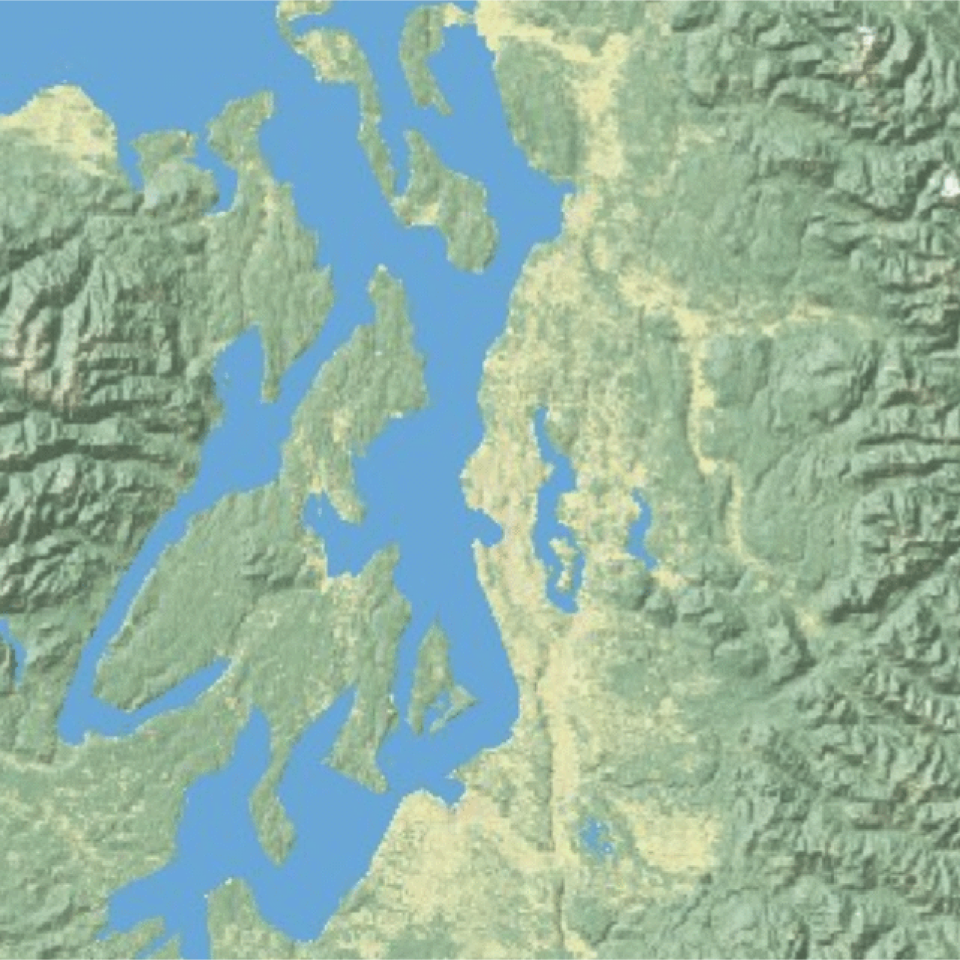
World_Topo_Map
This map is designed to be used as a basemap by GIS professionals and as a reference map by anyone. The map includes administrative boundaries, cities, water features, physiographic features, parks, landmarks, highways, roads, railways, and airports overlaid on land cover and shaded relief imagery for added context. The map provides coverage for the world down to a scale of ~1:72k. Coverage is provided down to ~1:4k for the following areas: Australia and New Zealand; India; Europe; Canada; Mexico; the continental United States and Hawaii; South America and Central America; Africa; and most of the Middle East. Coverage down to ~1:1k and ~1:2k is available in select urban areas. This basemap was compiled from a variety of best available sources from several data providers, including the U.S. Geological Survey (USGS), U.S. Environmental Protection Agency (EPA), U.S. National Park Service (NPS), Food and Agriculture Organization of the United Nations (FAO), Department of Natural Resources Canada (NRCAN), GeoBase, Agriculture and Agri-Food Canada, Garmin, HERE, Esri, OpenStreetMap contributors, and the GIS User Community. For more information on this map, including our terms of use, visit us online
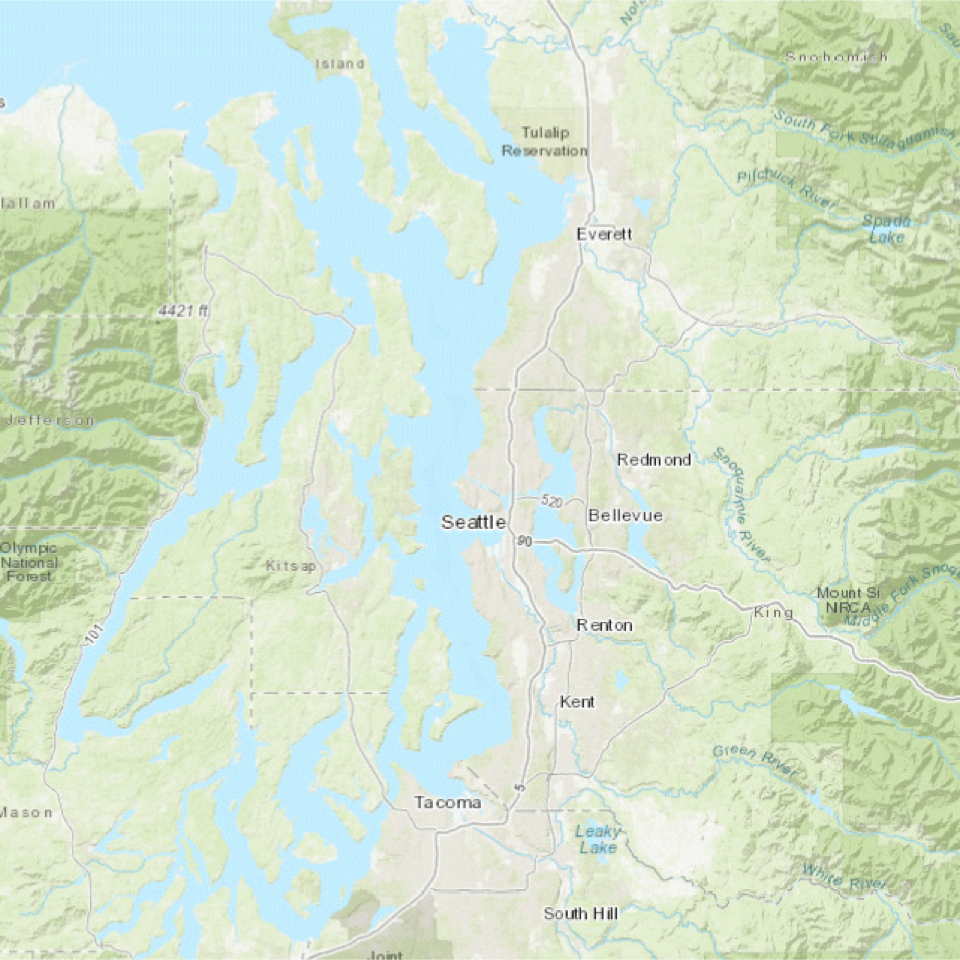
Simple/context
World_Shaded_Relief
This map portrays surface elevation as shaded relief. This map is used as a basemap layer to add shaded relief to other GIS maps, such as the ArcGIS Online World Street Map. It is especially useful in maps that do not contain orthoimagery. The map resolution (cell size) is as follows: 30 Meters for the U.S. 90 Meters for all land areas between 60° north and 56° south latitude. 1 KM resolution above 60° north and 56° south. The shaded relief imagery was developed by Esri using GTOPO30, Shuttle Radar Topography Mission (SRTM), and National Elevation Data (NED) data from the USGS. For more information on this map, including our terms of use, visit us online
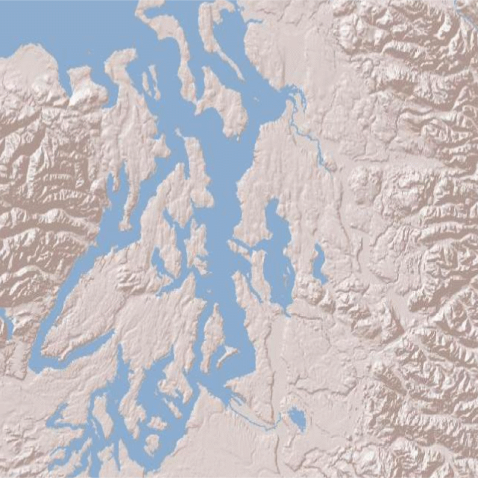
World_Terrain_Base
This map is designed to be used as a base map by GIS professionals to overlay other thematic layers such as demographics or land cover. The base map features shaded relief imagery, bathymetry, and coastal water features designed to provide a neutral background for other data layers. The map was compiled from a variety of sources from several data providers, including the U.S. Geological Survey, NOAA, and Esri. The base map currently provides coverage for the world down to a scale of ~1:1m and coverage for the continental United States and Hawaii to a scale of ~1:70k. For more information on this map, including our terms of use, visit us online
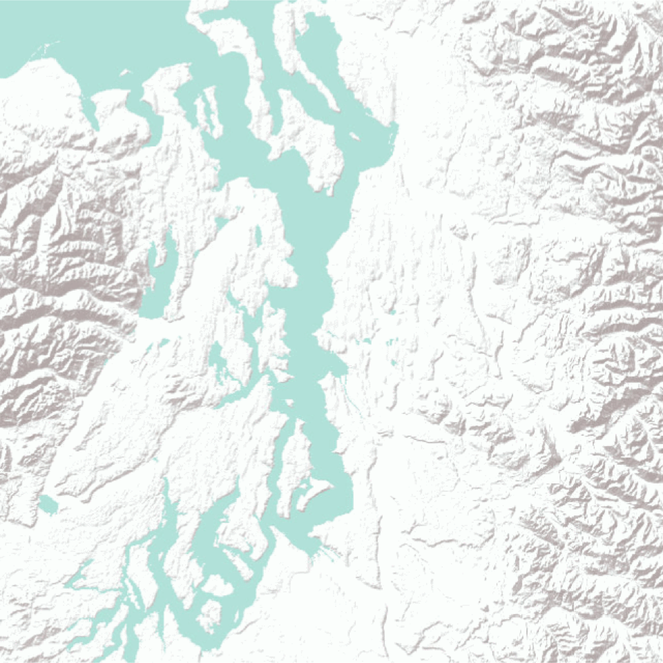
Canvas/World_Dark_Gray_Base
This map draws attention to your thematic content by providing a neutral background with minimal colors, labels, and features. Only key information is represented to provide geographic context, allowing your data to come to the foreground. This dark gray map supports bright colors, creating a visually compelling map graphic which helps your reader see the patterns intended. This map was developed by Esri using HERE data, Garmin basemap layers, OpenStreetMap contributors, Esri basemap data, and select data from the GIS user community. Worldwide coverage is provided from Level 0 (1:591M scale) through Level 10 (1:577k scale). In North America, Central and South America, Africa, India, Australia & New Zealand, Pacific Islands, and select countries in the Middle East from Level 11 (1:288k scale) through Level 16 (1:9k scale). For more information on this map, visit us online
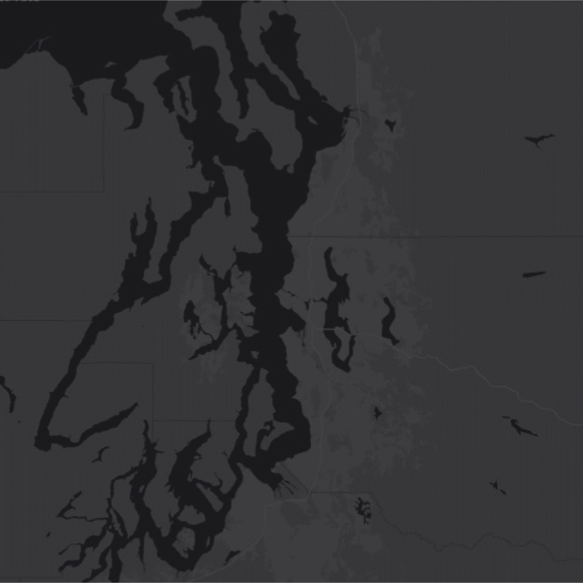
Canvas/World_Light_Gray_Base
This map draws attention to your thematic content by providing a neutral background with minimal colors, labels, and features. Only key information is represented to provide geographic context, allowing your data to come to the foreground. This light gray map supports any strong colors, creating a visually compelling map graphic which helps your reader see the patterns intended. This map was developed by Esri using HERE data, Garmin basemap layers, OpenStreetMap contributors, Esri basemap data, and select data from the GIS user community. Worldwide coverage is provided from Level 0 (1:591M scale) through Level 13 (1:72k scale). In North America (Canada, Mexico, United States), Europe, India, South America and Central America, Africa, most of the Middle east, and Australia & New Zealand coverage is provided from Level 14 (1:36k scale) through Level 16 (1:9k scale). For more information on this map, including our terms of use, visit us online
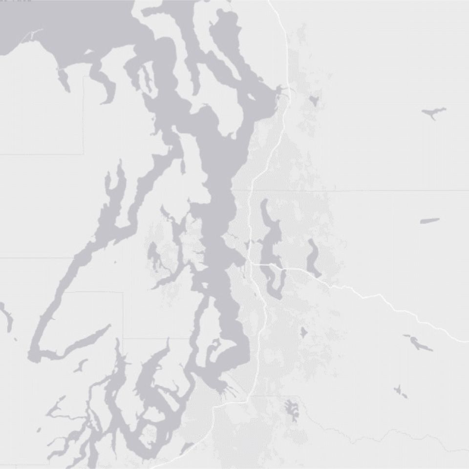
Elevation/World_Hillshade
This map portrays elevation as an artistic hillshade. This map is designed to be used as a backdrop for topographical, soil, hydro, landcover or other outdoor recreational maps. The map was compiled from a variety of sources from several data providers. The basemap has global coverage down to a scale of ~1:577k. In North America, South America, Africa, Australia, the East Indies, New Zealand, islands of the western Pacific, in most of Europe and continental Asia the coverage is available down to ~1:144k. In the United States, Western Europe, Finland and Norway coverage is provided to ~1:18k. Additionally, Netherlands, Denmark, Finland and select areas of the U.S. are provided down to ~1:9k. For more information on this map, including our terms of use, visit us online
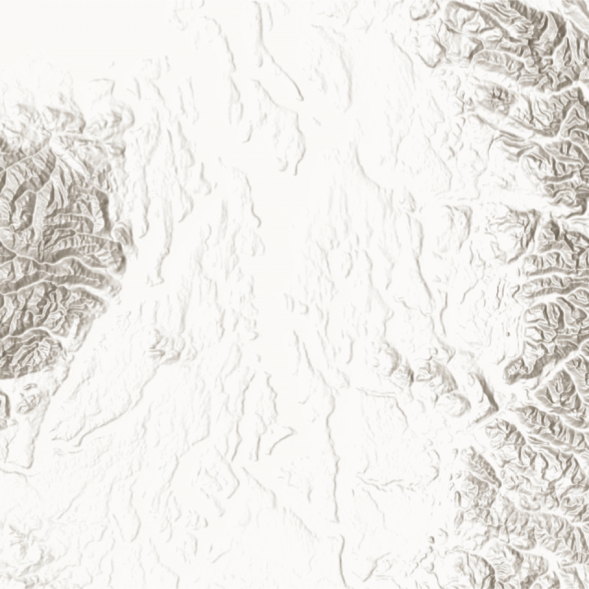
Ocean/World_Ocean_Base
This map is designed to be used as a base map by marine GIS professionals and as a reference map by anyone interested in ocean data. The base map features marine bathymetry. Land features include inland waters and roads overlaid on land cover and shaded relief imagery. The map was compiled from a variety of best available sources from several data providers, including General Bathymetric Chart of the Oceans GEBCO_08 Grid, National Oceanic and Atmospheric Administration (NOAA), and National Geographic, Garmin, HERE, Geonames.org, and Esri, and various other contributors. The base map currently provides coverage for the world down to a scale of ~1:577k, and coverage down to 1:72k in US coastal areas, and various other areas. Coverage down to ~ 1:9k is available limited areas based on regional hydrographic survey data. The base map was designed and developed by Esri. NOTE: Data from the GEBCO_08 grid shall not to be used for navigation or for any other purpose relating to safety at sea. The GEBCO_08 Grid is largely based on a database of ship-track soundings with interpolation between soundings guided by satellite-derived gravity data. In some areas, data from existing grids are included. The GEBCO_08 Grid does not contain detailed information in shallower water areas, information concerning the generation of the grid can be found on GEBCO’s web site: GEBCO. The GEBCO_08 Grid is accompanied by a Source Identifier (SID) Grid which indicates which cells in the GEBCO_08 Grid are based on soundings or existing grids and which have been interpolated. The latest version of both grids and accompanying documentation is available to download, on behalf of GEBCO, from the British Oceanographic Data Centre (BODC) BODC. The names of the IHO (International Hydrographic Organization), IOC (intergovernmental Oceanographic Commission), GEBCO (General Bathymetric Chart of the Oceans), NERC (Natural Environment Research Council) or BODC (British Oceanographic Data Centre) may not be used in any way to imply, directly or otherwise, endorsement or support of either the Licensee or their mapping system. For more information on this map, including our terms of use, visit us online
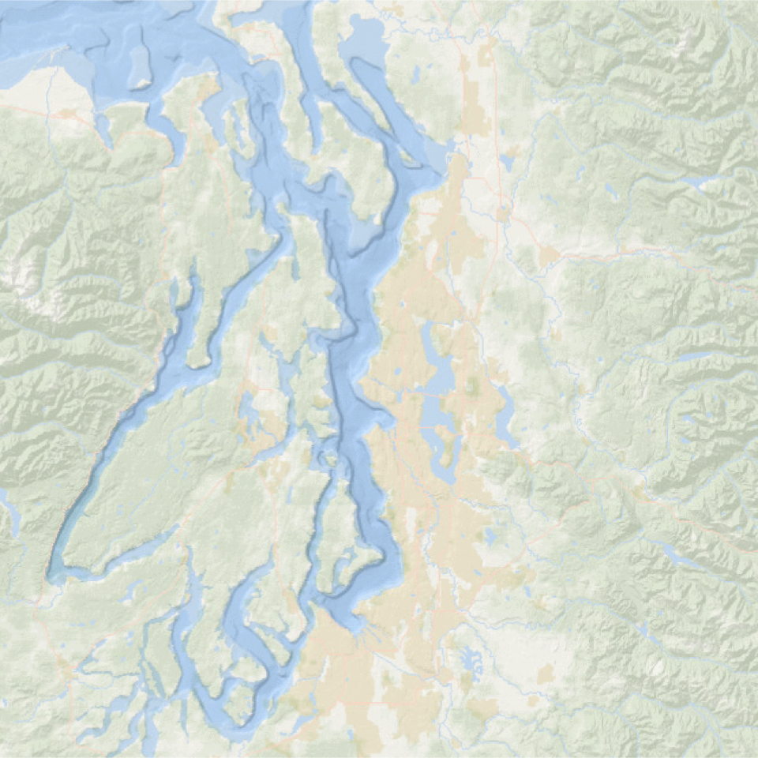